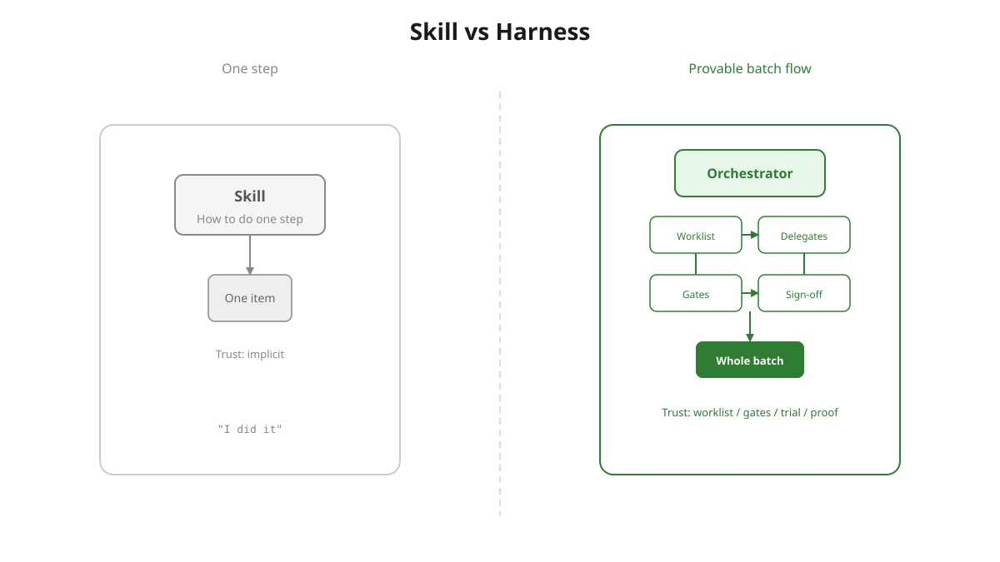
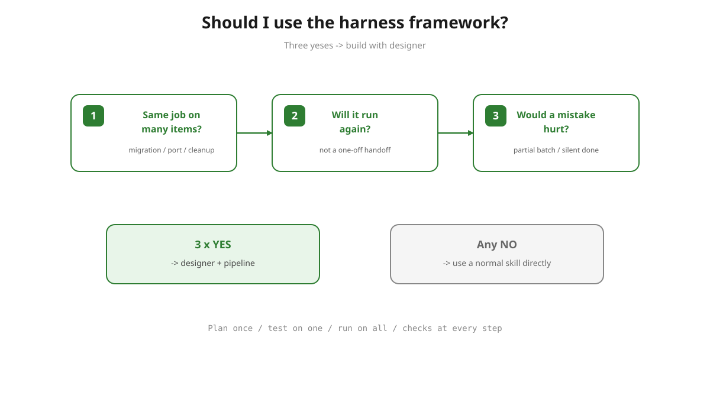
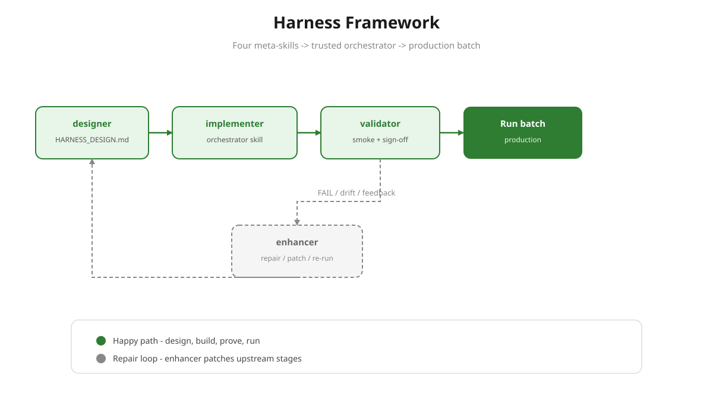
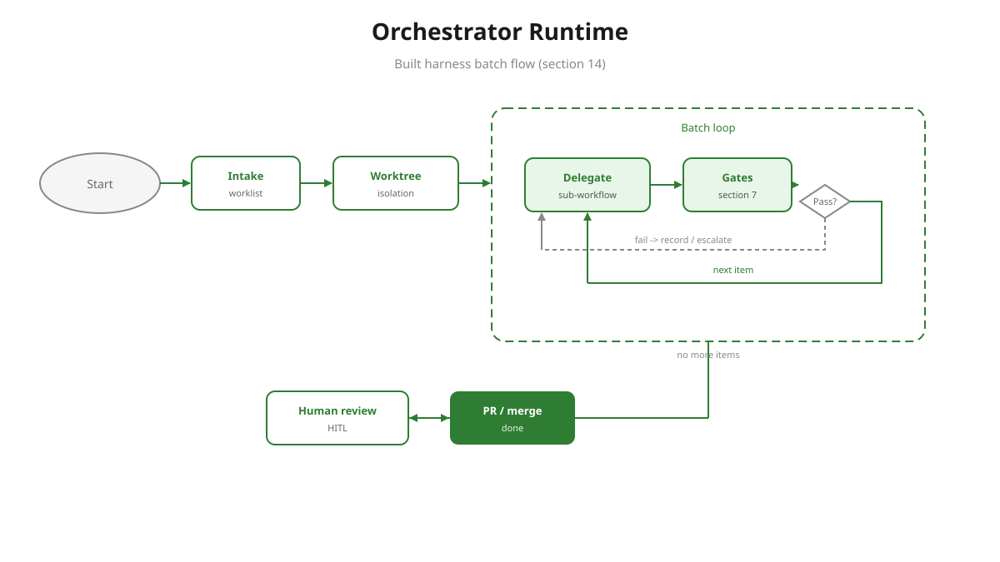

agent-harness-framework
Stop babysitting batch work. Plan it once, prove it on one item, run it on all fifty — with checks that must pass at every step and your sign-off before anything ships. No silent “done.” No half-finished migrations.
Concept

What this pipeline introduces is workflow design: you compose skills into a flow — reusing the skills that already exist, and flagging any missing ones to author separately — and apply harness-engineering principles to that flow. A skill is one step done well. A harness is the engineered flow around the steps: a deterministic worklist, gates that must pass, a trial on one item, isolation, and sign-off — the discipline that makes a whole batch trustworthy. The line isn’t how many items (a plain skill can loop over hundreds) — it’s whether the work is an engineered, provable flow.
| Skill | Harness | |
|---|---|---|
| What it is | One capability — a step done well | A designed workflow that wires steps together |
| Skills | Is one | Reuses existing ones as steps; authors the orchestrator, flags missing delegates |
| Defined by | Doing the task | The flow + harness-engineering principles |
| Trust from | Implicit (“done”) | Worklist · gates · trial on one · isolation · sign-off |
Reach for a plain skill for a task. Design a harness when the work is a flow that must be provably complete — batch size is just one trigger (see the three-question rule below).
Skills are musicians; the harness is the conductor with the score — order, timing, and no bow until every part was played.
A skill is a recipe. A harness is the banquet kitchen — prep list, dish order, taste-test on the first plate, chef sign-off before the rest.
Skill = how once. Harness = all done, checked, and provable.
Not skill-creator
No — they compose. skill-creator builds one step: how to do a task well. The harness framework designs the flow around the steps: which items, in what order, with which gates — reusing the steps you already have. In fact implementer calls skill-creator to author the orchestrator skill; delegate steps are reused by reference, and any that are missing get flagged to author separately (with skill-creator). Reach for skill-creator to make a step; reach for the harness framework to engineer the flow that runs steps at scale, provably.
| skill-creator | Harness framework | |
|---|---|---|
| Makes | One reusable skill (a step) | A designed workflow that composes skills |
| Hard part it solves | Doing the task well | The flow + proof: order, gates, trial, nothing skipped |
| Ships | skills/<name>/SKILL.md | Design → orchestrator skill → trial run → sign-off |
| Relationship | The worker | The production line — and it calls skill-creator to build the orchestrator |
Decision

Migration, port, cleanup across files/tests/repos.
Not a one-off — another session will repeat it.
Partial batch or silent “done” is expensive.
Three yeses → harness framework · Any no → use a normal skill
Meta-pipeline

Ctrl/Cmd + wheel zoom · drag to pan · double-click to fit · ⛶ expand
| Stage | Input | Output | Scope |
|---|---|---|---|
designer |
Domain + primitives | harness-designs/<orch>/HARNESS_DESIGN.md — §13 plan + §14 Mermaid |
Design only — no build |
implementer |
Design §13 + §14 (HARNESS_DESIGN_PATH) |
skills/<orch>/ — SKILL.md, refs, workflow.mermaid.md; packaged via skill-creator. Rules-only: AGENTS.md / .cursor/rules/* (no orchestrator skill) |
Build / resync only |
validator |
Built orchestrator + design §2/§7 — or rules-only artifacts | VALIDATION_REPORT.md + human sign-off. Orchestrator: smoke-run 1 §3 item (2 for migration / batch-processing) in throwaway worktree + §7 gates. Rules-only: static review of generated rules — no smoke-run |
Proof before production; throwaway |
enhancer |
Feedback / fail signals | EnhancementBrief → targeted patches; may re-run designer, implementer, or validator |
Repair loop |
Designer, implementer, and enhancer verify at the document level. The validator is the only meta-stage that runs the orchestrator (or statically reviews rules-only output) before you trust the batch.
Runtime

Orchestrator runtime — same model as docs/harness-framework/runtime.mmd
Per worklist item: delegate → §7 gates must pass → loop until the batch is done → human sign-off (HITL) before merge. A gate failure can emit an enhancer signal without silently skipping the item.
Get started
Invoke designer. Describe the batch job — it writes HARNESS_DESIGN.md.
implementer scaffolds the orchestrator; validator runs it on one real item.
Trial passes → turn it loose on the full worklist. Feedback? enhancer patches it.
| Stage | You get |
|---|---|
designer | Written plan: harness-designs/<name>/HARNESS_DESIGN.md |
implementer | Runnable orchestrator under skills/<name>/ (or rules-only artifacts) |
validator | Proof on one real item + VALIDATION_REPORT.md |
enhancer | Fixes when something drifts or fails |
Markdown sources: docs/harness-framework/ · Slide SVGs: illustrations/ · PNGs: pipeline.png, runtime.png